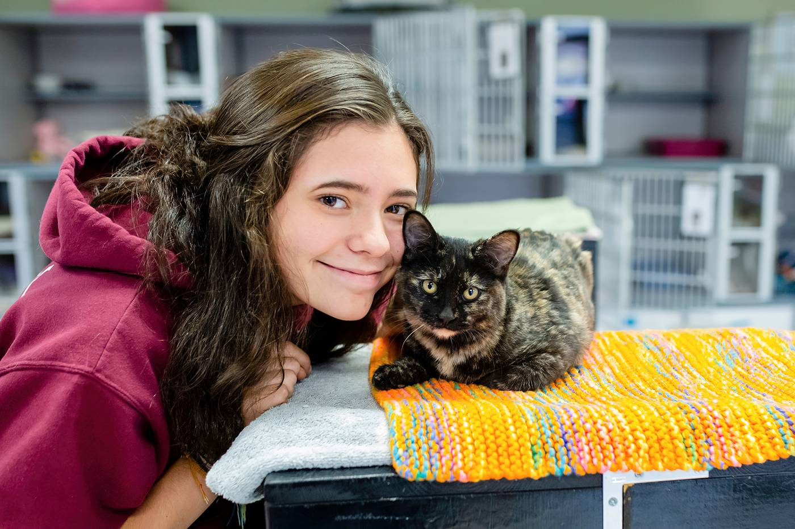
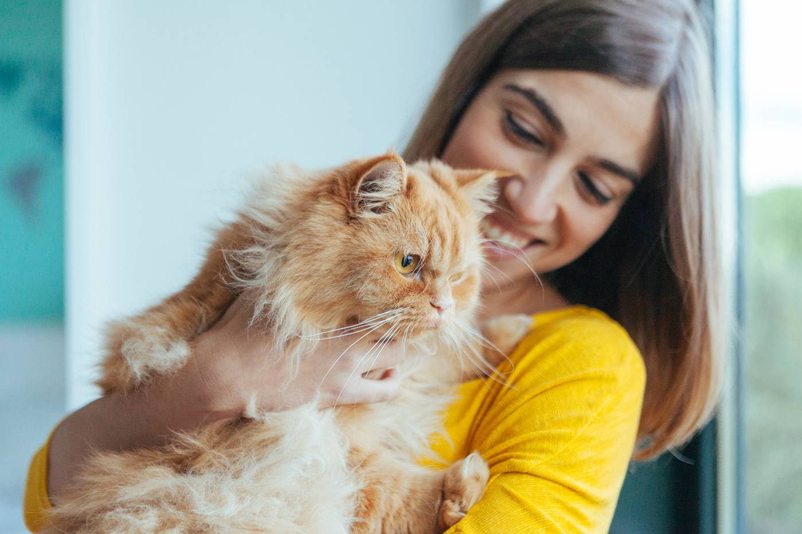

About Pawsitive Futures!

Our Mission
At Pawsitive Futures, our mission is to rescue, care for, and find loving forever homes for animals in need. We believe every pet deserves safety, compassion, and the chance to live a happy life with a family that will cherish them. Through responsible adoption, quality care, and community outreach, we work to ensure that every animal who comes through our doors is given the opportunity for a brighter future.
We are committed to educating our community about responsible pet ownership, the importance of adoption, and the lifelong commitment that comes with welcoming a pet into a home. By supporting both animals and adopters throughout the journey, Pawsitive Futures strives to create meaningful connections that benefit pets, families, and the community as a whole.

Our History
Pawsitive Futures was founded with a simple but powerful goal: to give animals in need a second chance at a loving home. What began as a small effort by a group of passionate animal lovers quickly grew into a dedicated adoption organization focused on rescuing, rehabilitating, and rehoming cats and dogs in our community.
In the early days, the team worked with local volunteers and foster families to provide temporary homes and proper care for rescued animals. As more people learned about the mission, community support grew through donations, volunteering, and adoptions. This support allowed Pawsitive Futures to expand its efforts and help even more animals find safe and permanent homes.
Today, Pawsitive Futures continues to focus on compassionate care, responsible adoption, and community education. Each pet that finds a forever family is a reminder of why the organization was created—to give animals the opportunity for a brighter, pawsitive future.